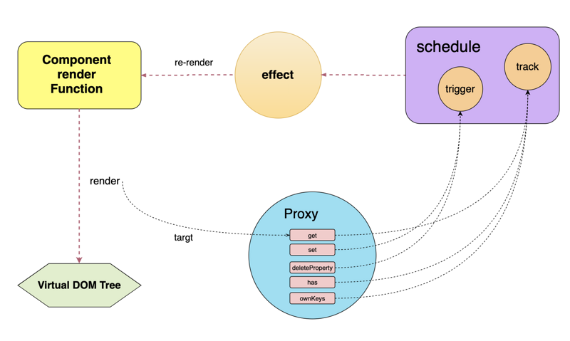

Vue3响应式系统之变化侦测
vue2中，响应式系统主要分为依赖收集和数据侦测，vue3也是一样。研究Vue3的响应式之前，我们先了解一下Vue3创建响应式数据的方法，为了兼容Vue2，Vue3保留了data选项的用法，不过我们主要来研究新增的reactive API和effact API，Vue3的响应式架构如下图： 
Vue3中通过调用reactive方法将数据转换成一个可观察的Proxy代理对象，通过effact方法实现依赖收集，在数据发生变化后调用传入回调函数，用法大致如下：
import {reactive, effect} from 'vue'
const state = reactive({
name: 'hello'
})
effect(() => {
console.log(state.name); // => 打印出hello
})
state.name = 'world' // => 再次打印出hello
可以看到核心就是reactive和effect这两个方法，一个用来数据侦测，一个用来依赖收集和响应，下面我们就来看看Vue3响应式具体怎样实现的，先从reactive数据侦测说起，上面我们已经见识了Proxy的威力，现在就来继续优化：
var toProxy = new WeakMap()
var toRaw = new WeakMap()
function isObject(obj){
return obj !== null && typeof obj === 'object'
}
function hasOwnKey(target, key){
return target.hasOwnProperty(key)
}
function reactive(target){
return createReactiveObject(target)
}
function createReactiveObject(target){
if(!isObject(target)) return
if(toProxy.has(target)) return toProxy.get(target)
if(toRaw.has(target)) return target
let baseHandler = {
get(target, key, receiver){
console.log(key,'获取');
let result = Reflect.get(target, key, receiver)
if(isObject(result)){
return reactive(result)
}
else{
return result
}
},
set(target, key, value, receiver){
let oldValue = target[key]
let result = Reflect.set(target, key, value, receiver)
if(!hasOwnKey(target, key)){
console.log(key,'新增设置');
}
else if(oldValue !== value){
console.log(key,'更改设置');
}
return result
},
deleteProperty(target, key){
return Reflect.deleteProperty(target, key)
}
}
let observed = new Proxy(target, baseHandler)
toProxy.set(target, observed)
toRaw.set(observed, target)
return observed
}
var data = {
name: 'hello',
list:[1,2],
info: {
age: 0
}
}
var state = reactive(data)
// state = reactive(data) // => 代码正常运行，因为有toProxy的判断
// state = reactive(state) // => 代码正常运行，因为有toRaw的判断
state.name = 'world'
state.list.push(3)
state.info.age = 18
上面的代码主要做了这几件事情：
1、创建一个代理对象。
2、get时判断value是否是对象，如果是需要递归。上面例子中，如果get中没有递归判断，那么list.push和info.age都无法正常运行，因为我们只代理了一级，后面的操作无法检测！这里有人也许会有疑问，上面不是说Vue2的缺点是递归么，那你Vue3也有递归啊？要说明的是，Vue2的递归，是程序一进入就开始递归，不管你数据有没有用上，如果数据复杂层级结构深会对性能有一定影响，而Vue3的递归是在用的时候（get）才会对当前的对象递归，性能更优化！
3、set时需要处理数组push方法产生set多次的情况（一次是值个改变，一次是length的改变），需要明确的是，只有数据发生变化我们才做响应，如果是新增key那肯定是发生了变化；如果key已存在则判断新值和旧值是否相等。
4、 判断数据对象被重复代理，和代理被重复代理的情况。这里用到了WeakMap，他的特点是对象可以作为key，并且对象是弱引用的，也就是一旦对象被删除，那么这里的引用不会影响垃圾回收机制，用WeakMap完美的实现了我们的需求！